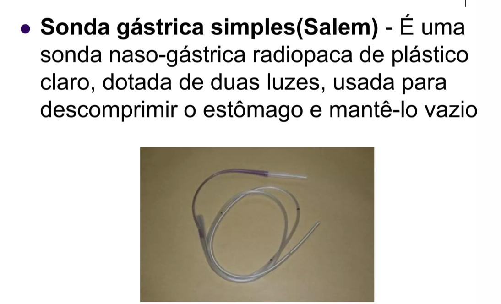

Sondagem Nasogástrica (SNG)
Definição e Indicações
A sonda nasogástrica (SNG) é um tubo flexível introduzido pela narina até o estômago.
Indicações:
- Descompressão gástrica (pós-op, obstrução, íleo paralítico)
- Remoção de conteúdo gástrico (lavagem em intoxicações, controle de sangramento GI alto)
- Nutrição enteral (incapacidade de deglutição segura)
- Administração de medicamentos (paciente sem via oral)
- Monitorização de sangramento pós-operatório
Tipos de Sondas

| Sonda | Luz | Material | Uso |
|---|---|---|---|
| Levin | Única (simples) | Plástico ou borracha; marcas circulares de guia | Drenagem/descompressão gástrica |
| Salem (gástrica dupla luz) | Dupla (1 para drenagem + 1 de ventilação) | PVC radiopaco | Descompressão + manutenção do estômago vazio; evita colabamento |
| Dobhoff | Simples | Poliuretano macio com ponta pesada e guia metálico | Nutrição enteral de longa duração; posição pós-pilórica (nasojejunal) |
| Sengstaken-Blakemore | Tripla (balão gástrico + balão esofagianes + lavagem) | Especial | Varizes esofagianas sangrantes (uso emergencial como ponte para endoscopia) |
| Miller-Abbott | Dupla (1 para mercúrio/ar no balão + 1 para aspiração) | 3 metros | Descompressão do intestino delgado |
Sonda de Salem: preferida no pós-operatório — a 2ª luz de ventilação impede o colapso do tubo e melhora a drenagem
Material Necessário
- Sonda nasogástrica do calibre adequado
- Luva de procedimento (não necessariamente estéril para técnica limpa)
- Gel lubrificante (lidocaína gel em paciente acordado)
- Fita adesiva para fixação
- Seringa 50 mL (Janela)
- Estetoscópio
- Copo d'água com canudo (para ajudar na deglutição, se o paciente cooperar)
- Cuba rim ou saco coletor
Checklist — Passos do Procedimento
Preparo
0/4 marcados
Inserção
0/8 marcados
Confirmação de Posição — OBRIGATÓRIO
0/4 marcados
Fixação
0/2 marcados
Contraindicações
| Contraindicação | Motivo |
|---|---|
| Fratura de base do crânio / TCE com suspeita de lâmina cribriforme fraturada | Risco de inserção intracraniana pela via nasal → usar via oral (orogástrica) |
| Obstrução nasal bilateral completa | Usar via oral |
| Estenose / lesão esofagiana conhecida | Risco de perfuração |
| Coagulopatia grave (relativo) | Risco de epistaxe |
| Varizes esofagianas (relativo para SNG comum) | Usar Sengstaken-Blakemore em sangramento; a SNG comum pode traumatizar |
Erros Clássicos e Como Evitá-los
| Erro | Consequência | Como Evitar |
|---|---|---|
| Inserir em paciente com fratura de base do crânio pela via nasal | Sonda intracraniana → lesão fatal | Usar via orogástrica ou questionar fratura de base |
| Não confirmar posição antes de usar | Administração de dieta/medicação no pulmão → pneumonia aspirativa | Confirmar SEMPRE antes de qualquer infusão |
| Usar ausculta do epigástrio como único método de confirmação | Falso positivo se a sonda estiver no brônquio | Associar aspiração + pH ou fazer RX |
| Direcionar a sonda para cima na narina | Trauma de corneto | Dirigir para baixo e para trás (paralela ao assoalho nasal) |
| Forçar a sonda quando há resistência | Criação de falsa via / epistaxe | Retirar e tentar pela outra narina ou usar via oral |
| Não fixar corretamente | Deslocamento; paciente retira sem perceber | Verificar o comprimento da sonda antes de cada uso |
| Sonda posicionada no piloro ou duodeno sem intenção | Dificuldade de drenagem gástrica eficaz | Posicionar na câmara gástrica e confirmar no RX |
Sonda de Sengstaken-Blakemore — Resumo
Indicação: varizes esofagianas ou gástricas com sangramento ativo (falha endoscópica ou como ponte)
3 luzes:
- Luz para insuflar balão gástrico → ancora no estômago (inflar com 200–250 mL de ar)
- Luz para insuflar balão esofagianes → compressão das varizes (inflar com 50–100 mL, pressão < 40 mmHg)
- Luz de lavagem gástrica → aspiração e lavagem do estômago
Complicações: ruptura esofagianes, aspiração, obstrução de via aérea → paciente com SB deve estar intubado
Alertas OSCE ⚠️
- Fratura de base do crânio = sonda orogástrica (nunca nasogástrica)
- Ausculta do epigástrio NÃO é método isolado confiável para confirmar posição
- Sonda nasojejunal (Dobhoff): confirmar posição pós-pilórica obrigatoriamente com RX
- Sengstaken-Blakemore: balão gástrico sempre inflado antes do esofagianes; nunca inflar apenas o esofagianes (risco de migração e obstrução)
- Remover SNG ao menor sinal de complicação (pneumonia aspirativa, epistaxe, lesão por pressão alar)
Fonte
- Gerado a partir de:
conteudo_drenos_e_sondas.md(Aula 9 — Drenos e Sondas — Cirurgia UNISA)